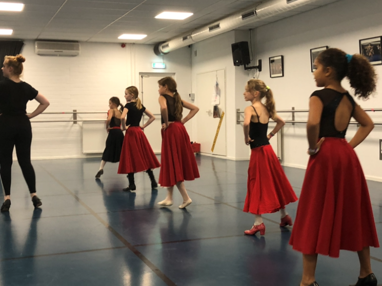

werelddans
Werelddans

Sarah Döker heeft zich gespecialisserd in Wereld dans. Met haar dansen kinderen en volwassenen de wereld rond met dans folklore uit verschillende landen. Er is aandacht voor houding , muzikaliteit, expressie en samenwerking. Ook wordt gewerkt aan verschillende choreografieën. Laat je verrassen door deze dansstijl! In het rooster bieden we een vaste les aan voor kinderen vanaf 8 en voor volwassenen starten we een project in de loop van seizoen 21/22. voor info kun je mailen naar babs@babsballetschool.nl